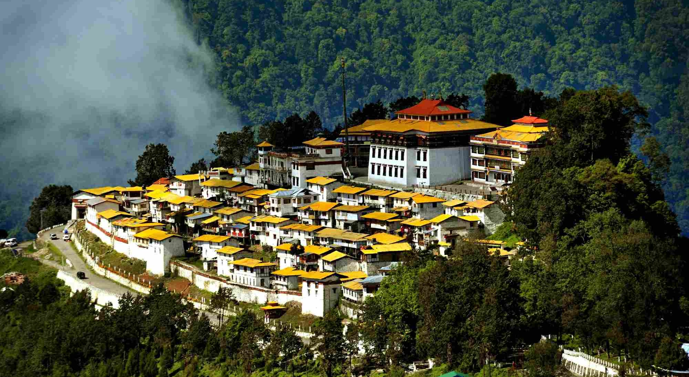
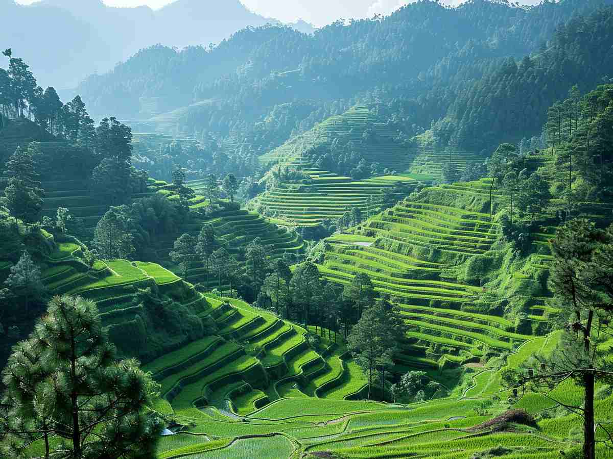
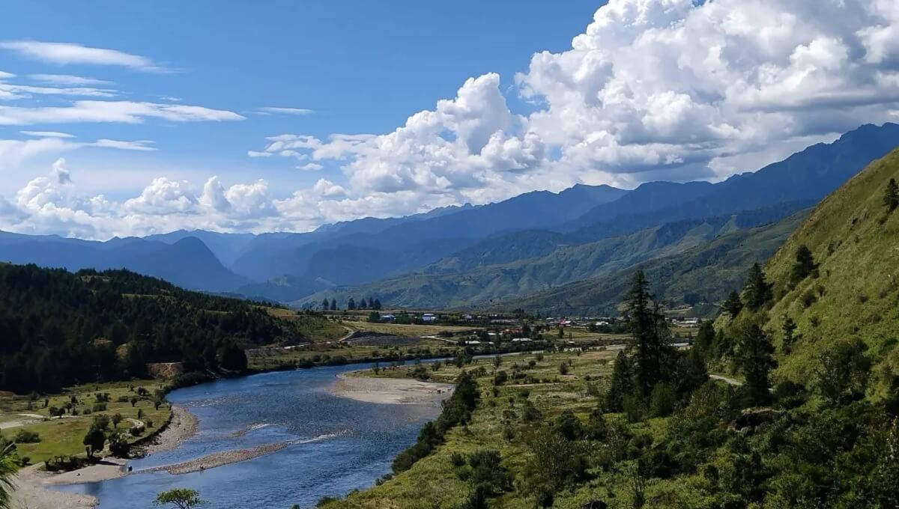

Day 1: The Gateway | Route: Guwahati ➔ Bhalukpong
- Activity: Cross the border and relax by the scenic Kameng River.
- Stay: Bhalukpong (Riverside Eco-Camp).
Known as the "Land of the Dawn-Lit Mountains," Arunachal Pradesh is a vibrant mosaic of 26 major tribes, including the Monpas and Adis. Its history spans from the 17th-century Tawang Monastery to its transition from the North-East Frontier Agency (NEFA) to full Indian statehood in 1987.
Life here is deeply connected to nature, following the rhythms of Jhum (shifting) cultivation and the worship of Donyi-Polo (Sun and Moon). Whether it’s the colorful Losar festival or the communal lifestyle in bamboo stilt houses (machangs), the state remains an unbroken link to ancient tribal traditions and a deep-rooted respect for the forest.
Some Interesting Fcats about Arunachal Pradesh:
Tawang: The Spiritual Soul
|
 |
|
 |
Ziro Valley: The Cultural Heart
|
Mechuka: The Mini Switzerland
|
 |
Namdapha National Park: The Wildlife Frontier
|
Sela Pass: The Frozen Gateway
|

|
1. By Air
|
2. By Rail
|
|
3. By Road
Road travel is the backbone of Arunachal tourism.
|
Choose Your Vibe
The Classic Tawang CircuitBest for: First-time visitors, families, and mountain lovers.Day 1: The Gateway | Route: Guwahati ➔ Bhalukpong
Day 2: Into the Orchids | Route: Bhalukpong ➔ Dirang
Day 3: The Frozen Pass | Route: Dirang ➔ Sela Pass ➔ Tawang
Day 4: Spiritual Tawang | Local Sightseeing
Day 5: High Frontier | Route: Bum La Pass & Madhuri Lake
Day 6: The Return Journey | Route: Tawang ➔ Bomdila
Day 7: Farewell | Route: Bomdila ➔ Guwahati
|
The Tribal & Adventure CircuitBest for: Culture seekers, photographers, and offbeat explorers.Day 1: Capital Arrival | Route: Arrival in Itanagar
Day 2: Into the Valley | Route: Itanagar ➔ Ziro Valley
Day 3: Apatani Heritage | Local Village Tour
Day 4: The Subansiri Trail | Route: Ziro ➔ Daporijo
Day 5: Galo Heartland | Route: Daporijo ➔ Aalo (Along)
Day 6: The Swiss Landscape | Route: Aalo ➔ Mechuka
Day 7: Forbidden Valley | Mechuka Exploration
Day 8: Departure | Route: Mechuka ➔ Pasighat ➔ Dibrugarh
|
| Time | Best For |
|---|---|
| March to June | Best for pleasant weather and blooming orchids. |
| September to October | Perfect for the Ziro Music Festival and post-monsoon greenery. |
| November to February | Ideal for snow lovers (Tawang/Sela Pass). |
Important things to know before you pack your bags.
You cannot enter the state without a permit. Carry at least 5-10 physical photocopies of your permit and ID, as you will need to submit them at various police and army check-posts.
Network connectivity is poor in the mountains, and ATMs are rare outside major towns like Itanagar or Pasighat. Carry enough liquid cash for food, local transport, and shopping. UPI (GPay/PhonePe) may not work in remote areas like Tawang or Mechuka.
Distance in Arunachal is deceptive. A 100km journey can take 5–6 hours due to winding roads and terrain. Tip: Always start your road journeys by 6:00 AM. In the mountains, it gets dark by 4:30 PM, and driving at night is not recommended.
Don't rely on high-speed internet. BSNL has the best coverage in remote corners, while Airtel works well in towns. Jio can be patchy in high-altitude zones. Download offline maps before you leave the plains.
Arunachal is home to 26 different tribes. Always ask for permission before taking photos of people, especially tribal elders. Dress modestly when visiting monasteries (*Gompas*) and remember to walk clockwise around Buddhist stupas.
The weather changes rapidly. Even in summer, nights in Tawang can be freezing. Pack thermals and a good windcheater/raincoat, regardless of the season you visit.